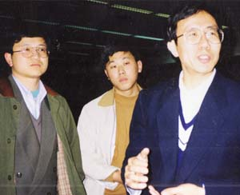
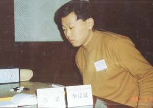
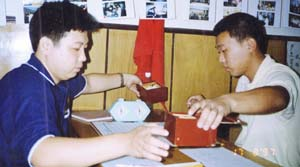
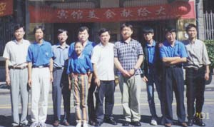
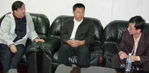
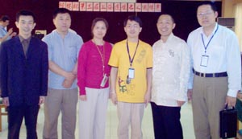
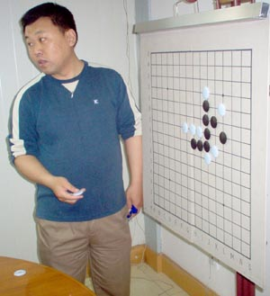

李洪斌简介：
1995年参加“上文杯”五子棋大赛，获季军。
1996年起开始从事上海五子棋运动发展性工作，上海第一代棋手和坚定的推广者。
1997年10月，获首届“友情杯”邀请赛亚军。
1998年1月，获首届“团结杯”十强赛冠军；
3月，参加北京地区的比赛，作为唯一打进A组循环赛的外省市选手获第8名；
11月，获第二届“团结杯”十强赛第5名。
2001年10月，获“经纬杯”大赛第4名；11月，建立李洪斌五子棋教室，并在游戏星城网站授课；12月，接受台湾棋手的网络攻擂，历时1月，最后战绩58：0，期间先后战胜台湾五子棋协会第一、二名的棋手，包括在第7届世界杯赛中获A组第10名的林圣闵五段，在台湾引起轰动；同月，与罗锦伟、顾炜共同创建中华连珠网。
2002年5月，获得“经纬杯”2002年上海五子棋名人邀请赛冠军。
2004年5月 参加过第二届经纬杯连珠名人邀请赛 ,第三名。
李洪斌,一个真正意义上的五子棋手。
出身北方、性格豪爽、刚正不阿。纵横五子近十年，上海棋坛之精神领袖，被公认为"江南第一人 "。信奉“最佳的防守就是攻击”的下棋理念，棋风刚烈、攻击犀利、威名远播，人称"快刀棋魔”。曾几何时，上海“十强赛中”中,兵不血刃,连拿九城；2001年，对垒台湾群侠，所向披靡，战绩辉煌 58：0。李洪斌对五子棋有着深刻的理解和潜心的研究，其呕心沥血之五子专著《寒星》、《松月》影响广泛，意义重大，另外李老师新出版了《松月定式大全》（2010年）。

98年全国五子棋邀请赛在中国棋院， 98年全国五子棋邀请赛在中国棋院比赛中
右为中国棋院副院长华以刚

97年在沪，京沪第一次交流，左为白涛 第一届经纬杯

2003年第二届中国棋院全国五子棋邀请赛间与那威交谈 第三届经纬杯左徐永伟（浙江）、李洪斌、周挥（北京）、顾炜、姚志勇（北京）、黄民城

在第三届经纬杯大盘讲解
叶子：我发现人们在写你时，经常用一些“杀手”、“刚烈”、“攻击”等词语，让人感觉你在棋盘上颇有武侠小说中江湖侠客们那种快意恩仇的意味 。
李洪斌：那是我早年的棋风，那时的棋经常要拼个你死我活。而现在更加注意的是平衡、忍让。以前我极少和棋，从第一届“经纬杯名人邀请赛”开始，和棋就逐渐多了。
叶子：早年的棋风是一往无前，充满激情的那种吧？
李洪斌：是的。但是，很少有棋手可以一直保持一种下棋风格。
叶子：这种转变跟年龄、经历有关吗？ 最初了解李老师是从燕阵的简单杀法开始....那时候还很多人在拆解老杀法...如何如何会有边界问题之类的 所以特佩服李老师
李洪斌：环境是我风格转变的一个重要因素吧。我早年的棋风不适应比赛的需要,在某个特定阶段，我是外地棋手参照的一面镜子，如果我的比赛成绩不好，会给上海连珠界带来
#2 Re:棋手访谈：快刀李洪斌 作者：岑小鱼 发表时间：2010-7-14 19:10:58